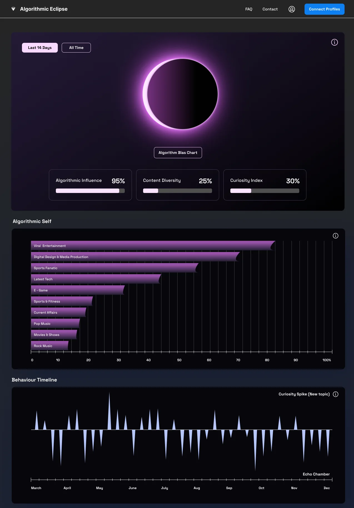
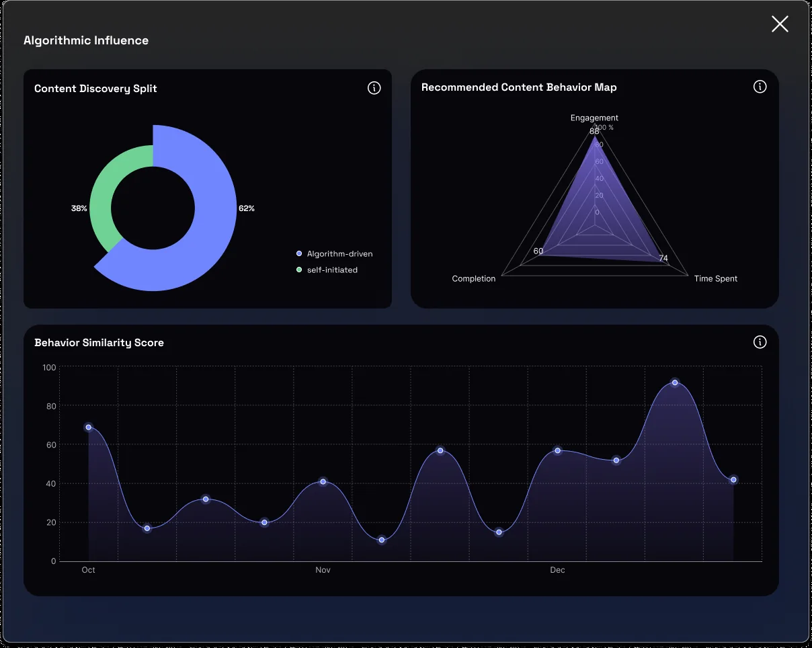
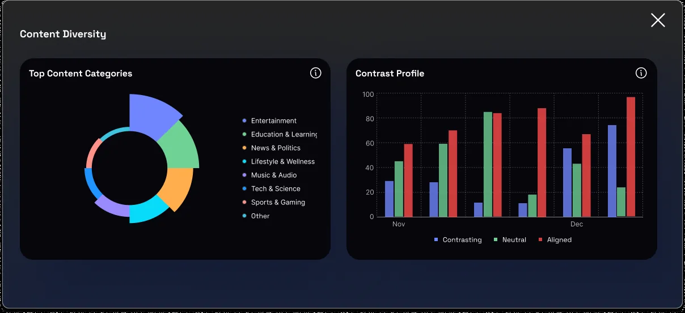
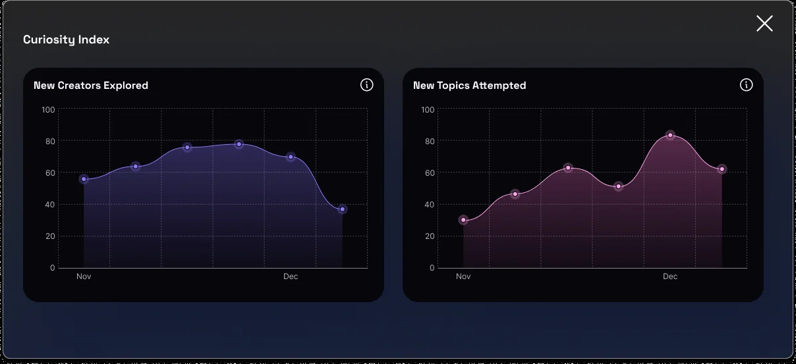
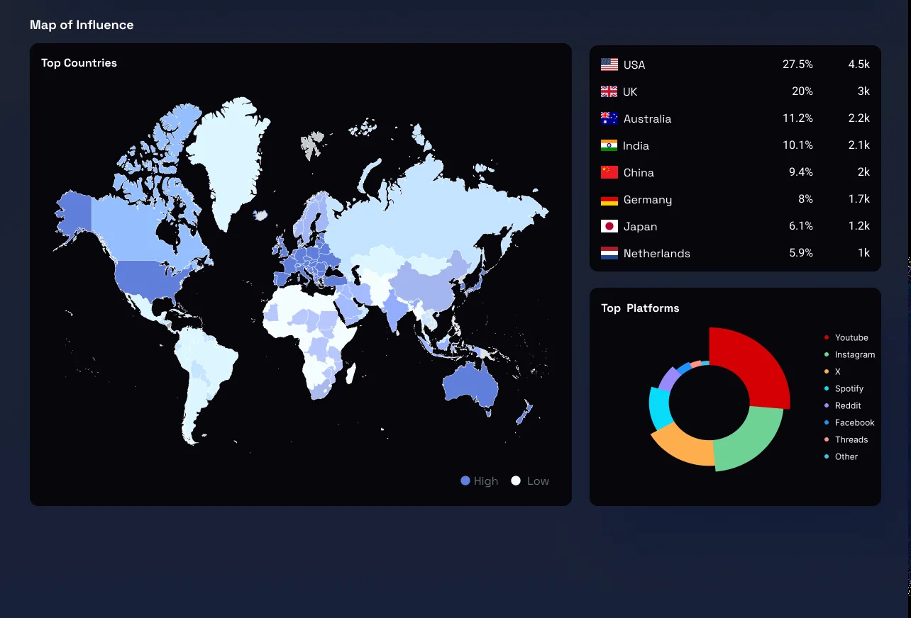

Background
Our feeds decide more than we notice
TikTok, Spotify, YouTube and Instagram choose much of what we watch and listen to. Their recommendation algorithms learn from every tap and serve us more of the same. Over time, feeds can narrow our taste, leave less room for chance discoveries, and reflect back a version of who the platform thinks we are.
None of this is visible to us. My MA thesis, Investigating How Recommendation Algorithms Influence Taste, Creative Discovery, and Identity Formation, looked at how people experience this. Every person I interviewed wanted more transparency about how their feed is shaped, or more control over it.
Algorithmic Eclipse is my design response: a way to make that invisible influence visible.
The idea
Your own interests are the light. The algorithm is the shadow.
The eclipse sums up your digital life in one image. Three scores drive it: how much of what you see is pushed by algorithms, how varied your content is, and how often you explore something new.
The more the algorithm leads, the further the dark disc moves across the light.
Drag the scores to see it change.
Design decisions
From what people told me to what I designed
Four themes came out of my interviews. Each one became a part of the dashboard.
-
What I heard
Feeds slowly narrow your taste
What I designedAlgorithmic Self
A ranked view of the content categories your feed has settled on, so you can see what it thinks you like.
-
What I heard
Discovery is easy, but predictable
What I designedDiscovery Split and Curiosity Index
How much content you found yourself versus what was pushed to you, and how often you try new creators and topics.
-
What I heard
The feed shows you a version of yourself
What I designedBehaviour Timeline and Similarity Score
Bursts of curiosity set against echo-chamber phases, and how closely your current feed matches the past weeks.
-
What I heard
People want to see the logic and have a say
What I designedExplanations and one clear summary
A plain-language explanation behind every metric, and a single eclipse that sums it all up at a glance.
The dashboard
A closer look





Prototype
Click through it yourself
Open the detail views from the overview. The prototype works best on a desktop screen.
What's next
Where I would take it
Algorithmic Eclipse is a concept with illustrative data, and I haven't tested it with users yet. My next steps would be:
- Test it with people who use these platforms every day: do they understand the eclipse at a glance, and does it change how they browse?
- Add the controls people asked for in the interviews: a reset button, an explore mode, and sliders to tune recommendations.
- Design the "Connect profiles" step so people stay in control of what data they share.